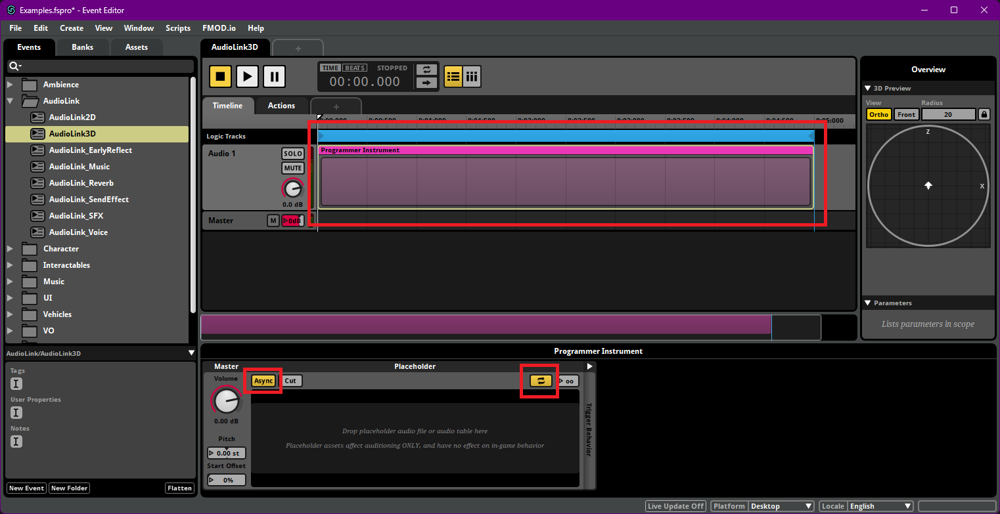
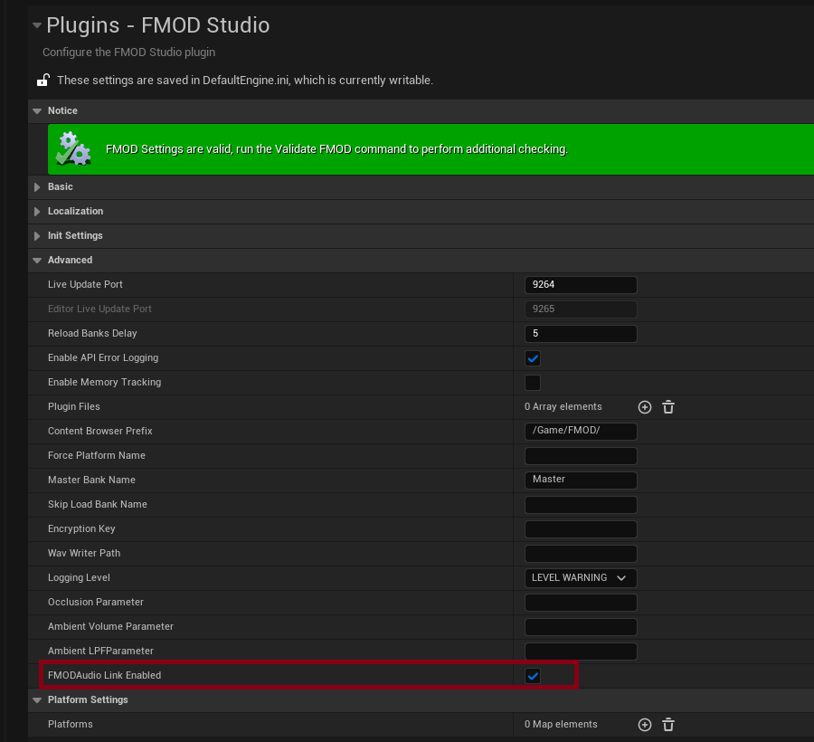
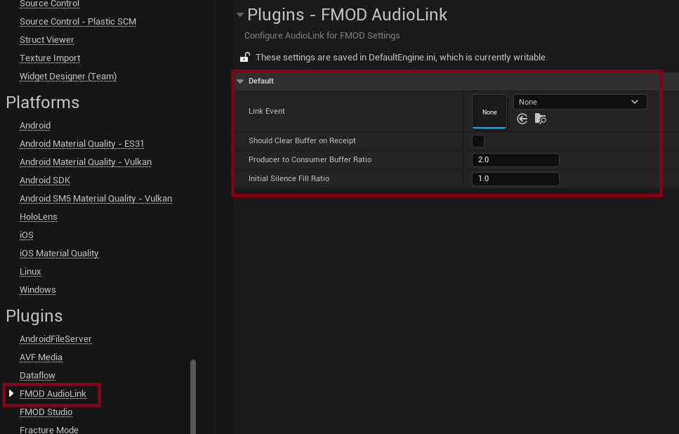
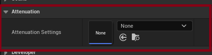
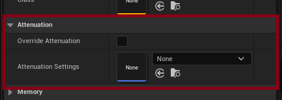
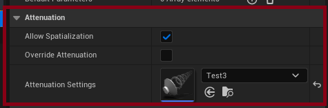
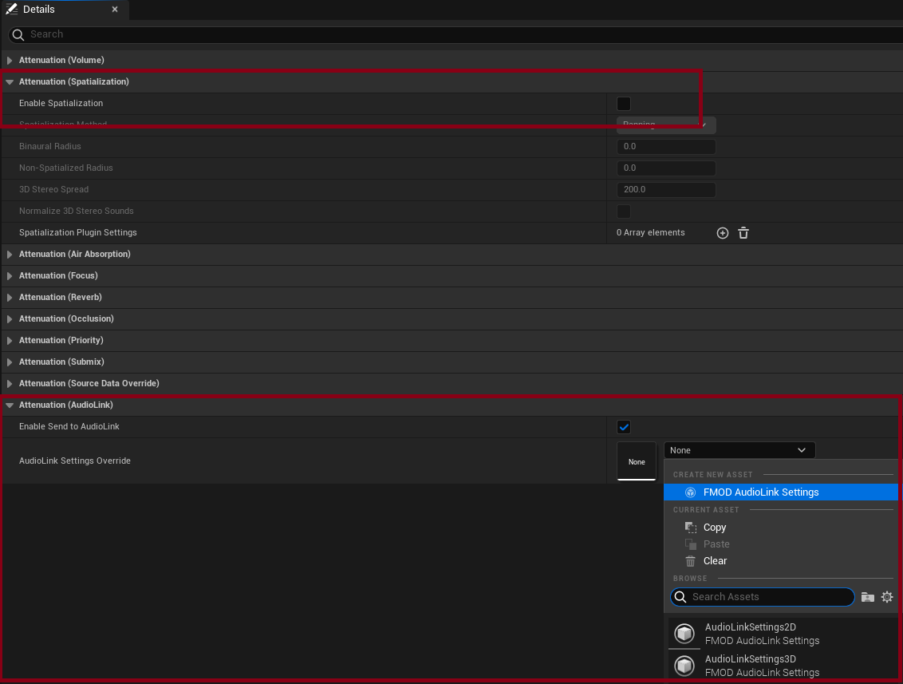
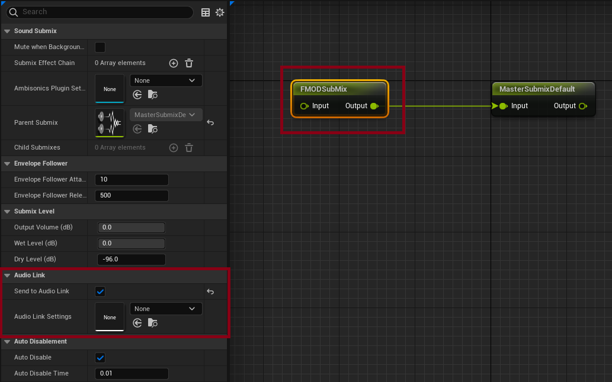
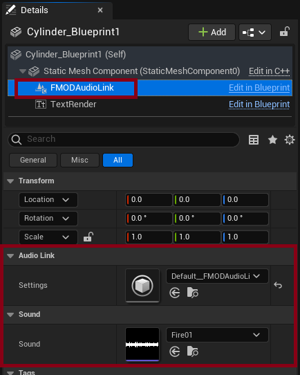

Unreal Integration 2.02
10. AudioLink
AudioLink is an API that connects Unreal Audio Engine to external software, allowing Audio to be passed from Unreal to FMOD. By using hardware abstraction, AudioLink bypasses the need for direct hardware access and provides the strengths of both Unreal Audio Engine and FMOD.
This section will assume a basic understanding of the Unreal AudioLink system and will focus on the FMOD specific information.
10.0.1 Linking with your Studio Project
The FMOD for Unreal AudioLink module assumes the Event linked contains a Programmer Instrument, this is what it uses to pass the sound data from Unreal to FMOD.

Generally you will want an Event that has a looping async programmer sound, because we may not know the length of the sounds being played from Unreal (ie. submixes are generally alive from startup to shutdown).
10.0.2 How to Enable/Disable FMOD AudioLink
In the FMOD for Unreal Settings, you can choose to enable/disable AudioLink support. This will load/unload the appropriate modules when the editor is reloaded.

10.0.3 Settings
The default FMOD AudioLink Settings can be found in the project settings, under 'Plugins > FMOD AudioLink'. This is used in cases where the property has not been set, so it is unnecessary to pass it every time you create an AudioLink.
You can create multiple FMOD AudioLink Settings assets for different FMOD Events, allowing you to easily route different sounds to different events allowing for greater customization.
These settings are used to set up the FMOD Event:
- Link Event - FMOD Studio Event to use with this settings asset.
- Should Clear Buffer on Receipt - If this is set, the buffer will be cleared after it's read, so it's not rendered by Unreal. Only applies if running both renderers at once. Disable this if you want to use the audio data from Unreal Engine.
- Producer to Consumer Buffer Ratio - This is the ratio of producer to consumer buffer size, a size too large can lead to latency, but too small can lead to buffer underruns. Typically, you should use a size at a 2:1 or higher ratio of the consumer's bitrate.
- Initial Silence Fill Ratio - Ratio of initial buffer to fill with silence ahead of consumption. Adjusting this can resolve starvation at the cost of added latency.

10.0.4 What Can AudioLink Transmit?
FMOD supports AudioLink through three link types:
- Source - eg. MetaSounds, Sound Cues, and Sound Waves.
- Submix.
- AudioLink Component - ie.
FMODAudioLink.
Source
MetaSounds, Sound Cues, and Sound Waves are classed as 'Sources', to play them through AudioLink you can use the Attenuation Settings or the Submix.
Attenuation Settings
In the source/component Details panel you will find the option to individually override or assign Attenuation settings:
- Allow Spatialization - Overrides spatialization enablement in either the attenuation asset or on this audio component's attenuation settings override.
- Override Attenuation - This breaks down the Attenuation settings in the details panel to override individual components.
- Attenuation Settings - Here you can specify a settings asset that uses all the Attenuation settings you have already set.
| Meta Sound | Sound Cue | Audio Component |
|---|---|---|
|  |  |  |
It is recommended to disable the Attenuation (Spatialization) option as FMOD needs to handle the spatialization.
To send specific sounds to FMOD, use the settings under Attenuation (AudioLink):
- Enable Send to AudioLink - Enables/Disables AudioLink on all sources using this Attenuation.
- AudioLink Settings Override - A predefined AudioLink Settings asset that can be used across multiple Attenuation settings, if this is empty then the default settings are used.

If you want to override the Attenuation Settings, either through an asset or in the details panel, but not use the Enable Send to AudioLink (ie. you want it to route through a specified submix instead) you need to make sure that the Attenuation (Spatialization) is disabled.
Submix
You can set the Send to Audio Link flag and the Audio Link Settings property in the submix's Details panel, under 'Audio Link'.

AudioLink Component
AudioLink Component support is included through the FMOD AudioLink Component, but is often unnecessary as sources are componentless by design, highly optimized for scale, and provide engine-level support.

The AudioLink Component is then controlled through the API:
PlayLinkSetLinkSoundStopLinkIsLinkPlaying

In UE5.2 and UE5.3, two events will spawn when using the FMODAudioLinkComponent: one for the component (intended) and one for the sound source (not intended). This appears to be an engine bug.
Workaround:
Create a new FMODAudioLinkSettings asset and leave the Link Event empty, then assign this to the sound source (through the Attenuation Settings).
10.0.5 Troubleshooting
- Use the console command
log LogFMODAudioLink Allto output (a lot) more detailed information to the log. - Ensure you enable the
Send to AudioLinkflag on the source or submix. - Be careful with pairing a source and submix containing the same signal chain, as that can cause data duplication and result in loud and undesirable audio stacking.
- FMOD Studio Profiler can now be used to track and manage events using Live Update.